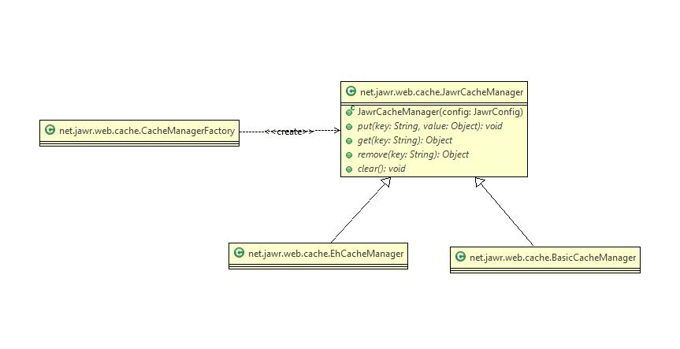

To increase performance, Jawr uses a cache manager to cache the used resource.
By default, Jawr uses an in-mermory cache manager, but Jawr allows the user to define their own cache manager.
A new interface net.jawr.web.cache.JawrCacheManager has been created to allow the user to define their own cache manager.
To set the custom cache manager which you want to use, you should use the following jawr configration property.
| Property name | Type | Purpose | Default value |
| jawr.cache.manager | String | The class name of the cache manager. | net.jawr.web.cache.BasicCacheManager |
To set up the EhCache manager, you must set the value of the *jawr.cache.manager* to net.jawr.web.cache.EhCacheManager.
To configure the EhCache manager, you can use the following jawr properties :
| Property name | Type | Purpose | Default value |
| jawr.ehcache.config.path | String | The path to the ehcache configuration file, which will be retrieve from classpath. | ehcache.xml |
| jawr.ehcache.cache.name | String | The name of the cache. | none |
Here is a example of jawr property file, to unable EhCache manager :
... jawr.cache.manager=net.jawr.web.cache.EhCacheManager jawr.ehcache.config.path=ehcache.xml jawr.ehcache.cache.name=sampleCache1 ...
You will find below a example of EhCache configuration. Please note that this is just an example, you will have to configure EhCache depending on your need :
<ehcache>
<diskStore path="java.io.tmpdir" />
<defaultCache maxEntriesLocalHeap="10000" eternal="false"
timeToIdleSeconds="120" timeToLiveSeconds="120" maxEntriesLocalDisk="10000000"
diskExpiryThreadIntervalSeconds="120" memoryStoreEvictionPolicy="LRU">
<persistence strategy="localTempSwap" />
</defaultCache>
<!--
Sample caches. Following are some example caches. Remove these before use.
-->
<!--
Sample cache named sampleCache1
This cache contains a maximum in memory of 10000 elements, and will expire
an element if it is idle for more than 5 minutes and lives for more than
10 minutes.
If there are more than 10000 elements it will overflow to the
disk cache, which in this configuration will go to wherever java.io.tmp is
defined on your system. On a standard Linux system this will be /tmp"
-->
<cache name="sampleCache1" maxEntriesLocalHeap="10000"
maxEntriesLocalDisk="1000" eternal="false" diskSpoolBufferSizeMB="20"
timeToIdleSeconds="300" timeToLiveSeconds="600"
memoryStoreEvictionPolicy="LFU" transactionalMode="off">
<persistence strategy="localTempSwap" />
</cache>
</ehcache>